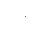
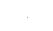
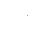

AM:INTernal
:FUNCtion {SINusoid|SQUare|RAMP|NRAMp|TRIangle|NOISe|USER}
:FUNCtion?
Select the shape of the modulating waveform. Used only when the Internal modulation source is selected (AM:SOUR INT command). You can use noise as the modulating waveshape, but you cannot use noise, pulse, or dc as the carrier waveform. The default is SIN. The :FUNC? query returns "SIN", "SQU", "RAMP", "NRAM", "TRI", "NOIS", or "USER".
· Select "SQU" for a square waveform with a 50% duty cycle. 
· Select "RAMP" for a ramp waveform with 100% symmetry.
· Select "TRI" for a ramp waveform with 50% symmetry. 
· Select "NRAM" (negative ramp) for a ramp waveform 
with 0% symmetry.
· If you select an arbitrary waveform as the modulating waveshape ("USER"), the waveform is automatically limited to 8K points. Extra waveform points are removed using decimation.